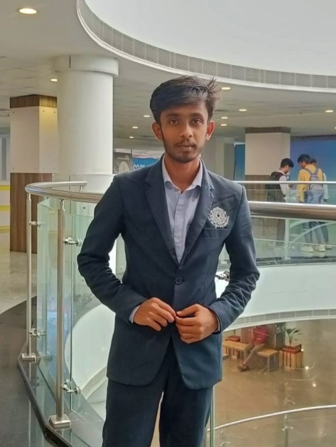
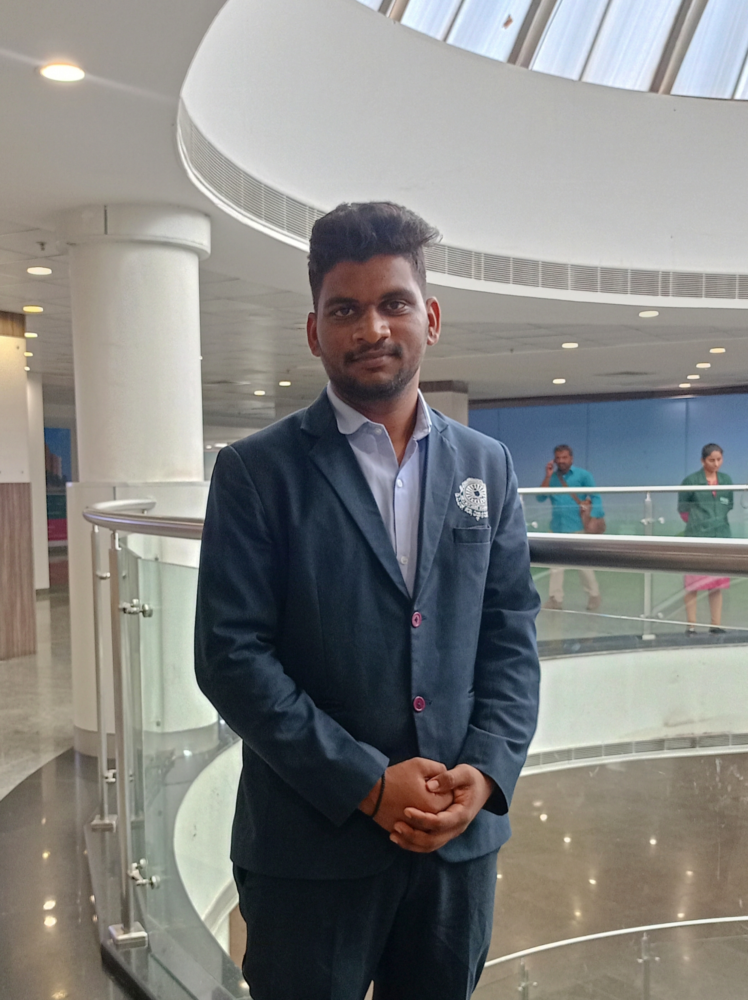
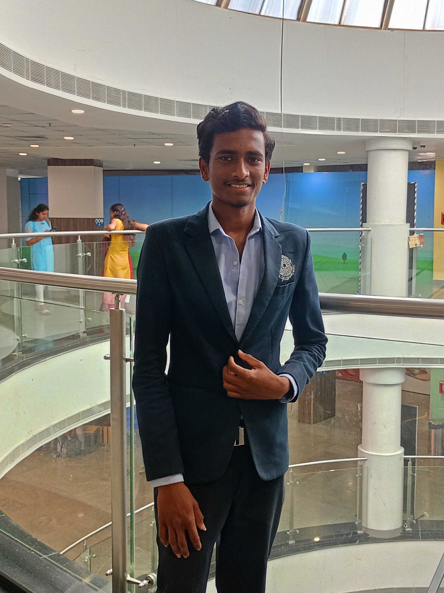

Inspiring Minds, Igniting Futures
Nestled in the serene town of Channagiri, Karnataka, the APJ Abdul Kalam Higher Primary School stands as a beacon of excellence, innovation, and inclusivity. Named after Dr. A.P.J. Abdul Kalam, India’s beloved "Missile Man" and former President, our institution embodies his vision of empowering young minds through education, curiosity, and moral integrity. Established in 1998, the school has grown into a nurturing hub where academic rigor meets creative exploration, fostering holistic development for over 1,200 students from Grades 1 to 8.
Our philosophy is rooted in Dr. Kalam’s belief that “Education is the most powerful weapon which you can use to change the world.” With state-of-the-art infrastructure, a dedicated faculty, and a curriculum that balances tradition and modernity, we aim to mold students into compassionate leaders, critical thinkers, and global citizens. This About page delves into our history, values, programs, and community impact, offering a comprehensive look at what makes our school a cornerstone of Channagiri’s educational landscape.
The APJ Abdul Kalam Higher Primary School was founded in 1998 by the Channagiri Educational Trust, a group of visionary educators and philanthropists inspired by Dr. Kalam’s transformative ideas. Initially a modest institution with 120 students and six teachers, the school rapidly gained recognition for its student-centric approach and emphasis on scientific inquiry.
Today, the school honors Dr. Kalam’s legacy through scholarships for underprivileged students, annual science fairs, and a focus on rural empowerment.
Mission: To provide equitable, high-quality education that nurtures intellectual, emotional, and ethical growth.
Vision: To create a generation of innovators and problem-solvers committed to societal progress.
Our curriculum aligns with the Karnataka State Board syllabus, enriched with interdisciplinary projects, experiential learning, and global perspectives.
Our Kalam Innovation Lab offers robotics kits, 3D printers, and coding workshops. Students participate in national competitions like the National Children’s Science Congress, winning accolades for projects on waste management and renewable energy.
Our team of 68 educators includes subject matter experts, counselors, and special education professionals. Teachers undergo annual training at institutes like the Regional Institute of Education, Mysuru, to stay updated on pedagogical trends.
Students join clubs like the Eco-Warriors, Space Explorers Club, and Young Authors’ Guild. Annual highlights include the Kalam Science Expo and inter-school sports tournaments.
Notable alumni include Dr. Anika Rao a climate scientist. Mr. Rohan Shetty*, founder of a tech startup. The alumni association mentors current students and funds infrastructure projects.
Affiliated with the Karnataka State Board and recognized by the National Council of Educational Research and Training (NCERT).
“The school’s focus on creativity helped me discover my passion for robotics.”
– Priya M., Grade 8 Student
“Education is not just about academics; it’s about building character. We strive to create an environment where every child feels valued and inspired.”
– Mrs. Shobha Ramesh, Principal
Plans include a vocational training center and AI-integrated classrooms by 2025.
Address: NH-75, Channagiri, Davangere District, Karnataka – 577213
Phone: +91-8199-267845
Email: office@kalamchannagiri.edu.in
Website: www.kalamchannagiri.edu.in




APJ Abdul Kalam Higher Primary School in Channagiri is driven by a forward-thinking management team that plays a vital role in nurturing a culture of excellence and innovation. The school’s management, although operating independently of its daily academic environment, provides strategic guidance and unwavering support to ensure that every student receives an enriching and transformative educational experience.
A visionary leader with an eye for innovation, Darshan SM is known for his strategic insights and commitment to fostering academic excellence. His approach emphasizes sustainable growth and community engagement, ensuring that the school’s ethos remains grounded in both tradition and modernity.
Manoj PC brings a wealth of practical expertise and a pragmatic approach to problem-solving. With a focus on operational efficiency and transparent management, he plays a critical role in streamlining the school’s administrative processes, thereby ensuring that the institution remains agile in adapting to educational trends.
Recognized for his creative strategies and dynamic leadership, Darshan CH is instrumental in driving curriculum enhancements and extracurricular innovations. His dedication to progressive education methods inspires both staff and students to explore new avenues of learning and personal development.
Varun Kumar TM infuses the team with a fresh perspective and forward-thinking ideas. His focus on integrating modern technologies and best practices into the school’s framework helps to bridge traditional educational methods with the demands of today’s digital age.
To visually represent the essence of the management team without direct association to the school’s traditional imagery, consider the following creative image concept:
Composition & Layout: Create a professional group portrait featuring four individuals arranged in a balanced and harmonious layout. The individuals should be portrayed in business-casual or smart professional attire to convey approachability and leadership.
Background & Symbolism: Use a minimalistic background with subtle abstract elements—such as soft gradients or geometric shapes—that symbolize growth, innovation, and unity. This backdrop should steer clear of any explicit references to the school’s architecture or official branding, ensuring the image stands independently.
Visual Style: Opt for a modern, clean aesthetic with a warm color palette to evoke trust and optimism. Each individual’s pose and expression should communicate confidence, determination, and a collaborative spirit, emphasizing the synergy of the management team.
Name Integration: Incorporate the names—Darshan SM, Manoj PC, Darshan CH, and Varun Kumar TM—into the design either as a caption or subtly integrated into the layout, ensuring the focus remains on their leadership qualities and the collaborative nature of their work.
This content and image concept can be used on digital platforms, brochures, or presentations to highlight the dedicated management team behind APJ Abdul Kalam Higher Primary School Channagiri, emphasizing their collective commitment to educational excellence and innovation.
APJ Abdul Kalam Higher Primary School.
Channagiri - 577213